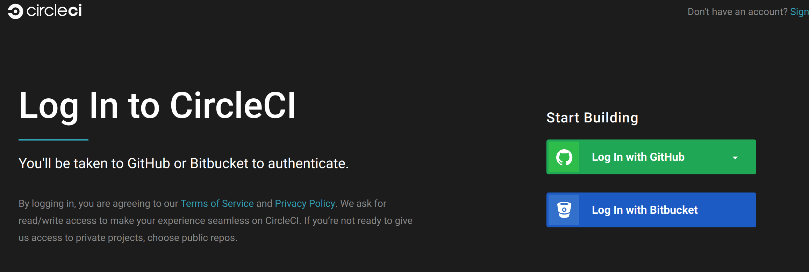
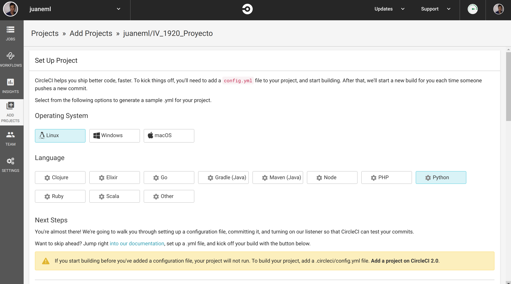

IV_Proyecto
2019-2020
Este microservicio va dirigido a personas que quieren dejar de fumar.
Get Started
Integración continua
circleci 
• Como sistema de integración continua opcional se ha elegido circleci.
• Para poder hacer uso del servicio de circleci vamos a la página de circleci.
1. Registro
• Nos creamos una cuenta con la cuenta de github.
2. Añadimos el proyecto
• Una vez iniciamos sesión vamos a sección "add projects" botton "+" y añadimos el proyecto al que queremos hacer el seguimiento, pulsamos "Set up Proyect".
• Veremos algo como esto

• Elegimos el sistema operativo, en mi caso Linux.
• Elegimos el lenguage de programación, en mi caso Python.
3. Configuración archivo circleci/config.yml
• A continuación, segimos la instruciones en pantalla para crear el archivo config.yml.
• Dentro de nuestro repositodio creamos una carpeta con el nombre .circleci y dentro de la carpeta creamos el archivo config.yml
•Para la creación de la carpeta y el archivo podemos hacerlo de dos formas en la página de Github situandonos en la raíz de nuestro repositorio o bien si tenemos clonado nuestro reposotorio en nuestro lugar de trabajo local.
•Voy a optar por la segunda opción por tanto abrimos un terminal y ejecutamos las siguientes intrucciones:
mkdir .circleci vi .circleci / config.yml
• Mi configuración del archivo config.yml es así:
##
# Check https://circleci.com/docs/2.0/language-python/
# #
version: 2
jobs:
build:
docker:
- image: circleci/python:3.7-rc-node
working_directory: ~/prueba_travis
steps:
- checkout
# Download and cache dependencies
- restore_cache:
keys:
- v1-dependencies-{{ checksum "requirements.txt" }}
# fallback to using the latest cache if no exact match is found
- v1-dependencies-
- run: sudo pip3 install -r requirements.txt
- run: sudo npm install npm-install-all -g
- run: sudo npm install pm2 -g
- run:
name: init app
command: make start
- run:
name: status app
command: make status
- run:
name: tests
command: make -B test
- run:
name: stop app
command: make stop
- run:
name: delete app
command: make delete
•Pasamos a explicar, la configuración del archivo config.yml
•Primero definimos la imagen que en mi caso es un contenedor con ubuntu y como lenguaje python 3.7.
•Resturamos la cache del contenedor.
•Instalamos el fichero requirements.txt
•Instalamos el gestor nmp para poder instalar el gestor de tareas pm2.
•Instalamos el gestor de tareas pm2.
•Haciendo uso de make, make start iniciamos el servicio.
•Con make status, vemos el estado del servicio.
•Para ejecutar los test hacemos `make -B test` la opción `-B` para forzar que se hagan los test.
•Para parar el servio make stop.
•Para borrar el servicio del gestor de tareas hacemos uso de make delete